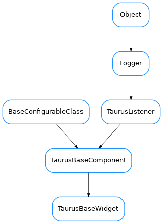

TaurusBaseWidget¶

-
class
TaurusBaseWidget(name, parent=None, designMode=False)[source]¶ Bases:
taurus.qt.qtgui.base.taurusbase.TaurusBaseComponentThe base class for all Qt Taurus widgets.
Note
Any class which inherits from TaurusBaseWidget is expected to also inherit from QWidget (or from a QWidget derived class)
-
changeEvent(evt)[source]¶ overwrites QWidget.changeEvent(self, evt) to handle the ParentChangeEvent in case this widget is using the parent model. Always calls the QWidget.changeEvent in order not to lose events
-
emitValueChanged(*args)[source]¶ Connect the specific XXXXChanged signals from derived classes to this method in order to have a unified signal which can be used by Taurus Widgets
-
getAutoTooltip()[source]¶ Returns if the widget is automatically generating a tooltip based on the current widget model.
Return type: boolReturns: True if automatically generating tooltip or False otherwise
-
getDropEventCallback()[source]¶ returns the method to be called when a dropping event occurs. The default implementation returns self.setModel. Reimplement it subclasses to call different methods.
Return type: callableReturns:
-
getModelMimeData()[source]¶ Returns a MimeData object containing the model data. The default implementation fills the TAURUS_MODEL_MIME_TYPE. If the widget’s Model class is Attribute or Device, it also fills TAURUS_ATTR_MIME_TYPE or TAURUS_DEV_MIME_TYPE, respectively
Return type: QMimeDataReturns:
-
getParentTaurusComponent()[source]¶ Returns the first taurus component in the widget hierarchy or None if no taurus component is found
Return type: TaurusBaseComponentorNoneReturns: the parent taurus base component
-
getQtClass(bases=None)[source]¶ Returns the parent Qt class for this widget
Parameters: bases ( sequence<class> orNone) – the list of class objects. If None is given (default) it uses the object base classes from __bases__Return type: QWidget classReturns: the QWidget class object
-
classmethod
getQtDesignerPluginInfo()[source]¶ Returns pertinent information in order to be able to build a valid QtDesigner widget plugin.
The dictionary returned by this method should contain at least the following keys and values: - ‘module’ : a string representing the full python module name (ex.: ‘taurus.qt.qtgui.base’) - ‘icon’ : a string representing valid resource icon (ex.: ‘designer:combobox.png’) - ‘container’ : a bool telling if this widget is a container widget or not.
This default implementation returns the following dictionary:
{ 'group' : 'Taurus [Unclassified]', 'icon' : 'logos:taurus.png', 'container' : False }
Return type: dictReturns: a map with pertinent designer information
-
getSupportedMimeTypes()[source]¶ returns a list of supported mimeTypes that this widget support (ordered by priority). If none is set explicitely via
setSupportedMimeTypes(), a best effort will be tried based on the model class..seealso:
setSupportedMimeTypes()This provides only a very basic implementation. Reimplement in derived classes if needed
Return type: list<str>Returns: list of MIME type names
-
handleEvent(evt_src, evt_type, evt_value)[source]¶ very basic and generalistic handling of events.
Override when necessary.
Parameters:
-
handleMimeData(mimeData, method)[source]¶ Selects the most appropriate data from the given mimeData object (in the order returned by
getSupportedMimeTypes()) and passes it to the given method.Parameters: - mimeData (
QMimeData) – the MIME data object from which the model is to be extracted - method (
callable<str>) – a method that accepts a string as argument. This method will be called with the data from the mimeData object
Return type: strorNoneReturns: returns the MimeType used if the model was successfully set, or None if the model could not be set
- mimeData (
-
isDragEnabled()[source]¶ whether the user can drag data from this widget
Return type: boolReturns: True if the user can drag data
-
modelChanged¶ Base signal modelChanged
-
mousePressEvent(event)[source]¶ reimplemented to record the start position for drag events. See
QWidget
-
parentModelChanged(parentmodel_name)[source]¶ Invoked when the Taurus parent model changes
Parameters: parentmodel_name ( str) – the new name of the parent model
-
recheckTaurusParent()[source]¶ Forces the widget to recheck its Taurus parent. Taurus Widgets will in most situations keep track of changes in their taurus parenting, but in some special cases (which unfortunately tend to occur when using Qt Designer) they may not update it correctly.
If this happens, you can manually call this method.
For more information, check the
issue demo example
-
safeApplyOperations(ops=None)[source]¶ Applies the given operations (or the pending operations if None passed)
Parameters: ops ( sequence<TaurusOperation> orNone) – list of operations to apply. If None is given (default) the component fetches the pending operationsReturn type: boolReturns: False if the apply was aborted by the user or if the widget is in design mode. True otherwise.
-
setAutoTooltip(yesno)[source]¶ Determines if the widget should automatically generate a tooltip based on the current widget model.
Parameters: yesno ( bool) – True to automatically generate tooltip or False otherwise
-
setDisconnectOnHide(disconnect)[source]¶ Sets/unsets disconnection on hide event
Parameters: disconnect ( bool) – whether or not to disconnect on hide event
-
setDragEnabled(enabled)[source]¶ sets whether the user is allowed to drag data from this widget
Parameters: modifiable ( bool) –
-
setModelCheck(model, check=True)[source]¶ Sets the component taurus model. Setting the check argument to True (default) will check if the current model is equal to the given argument. If so then nothing is done. This should be the standard way to call this method since it will avoid recursion.
Parameters:
-
setModelInConfig(yesno)[source]¶ extends
TaurusBaseComponent.setModelInConfig()to include also the “useParentModel” property
-
setModifiableByUser(modifiable)[source]¶ Reimplemented to acept/reject drops based on whether the widget is modifiable by the user. See
TaurusBaseComponent.setModifiableByUser()
-
setSupportedMimeTypes(mimetypes)[source]¶ sets the mimeTypes that this widget support
Parameters: mimetypes ( list<str>) – list (ordered by priority) of MIME type names
-
setUseParentModel(yesno)[source]¶ Sets/unsets using the parent model.
Note
in some cases you may need to call
recheckTaurusParent()after reparenting of some of this widget’s ancestorsParameters: yesno ( bool) – whether or not to use parent modelSee also
-
updatePendingOpsStyle()[source]¶ This method should be reimplemented by derived classes that want to change their appearance depending whether there are pending operations or not
-
updateStyle()[source]¶ Updates the widget style. Default implementation just calls QWidget.update()
Override when necessary.
-
valueChangedSignal¶ Base signal valueChanged
-